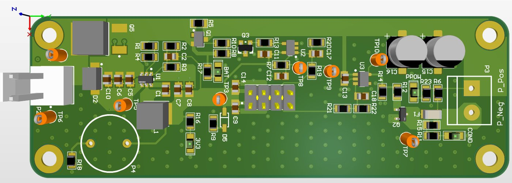
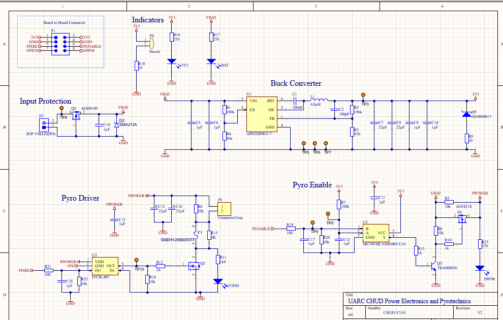
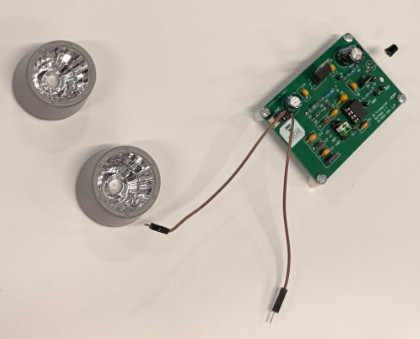
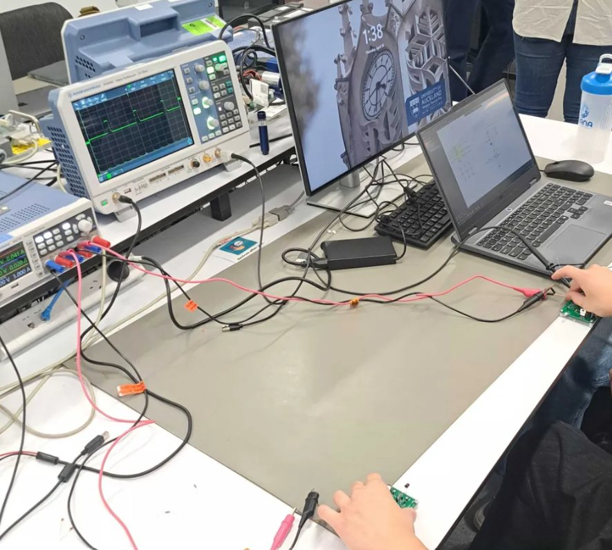
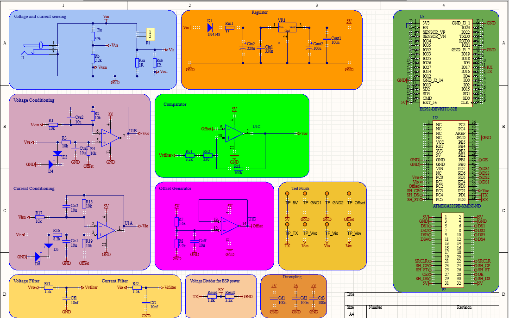
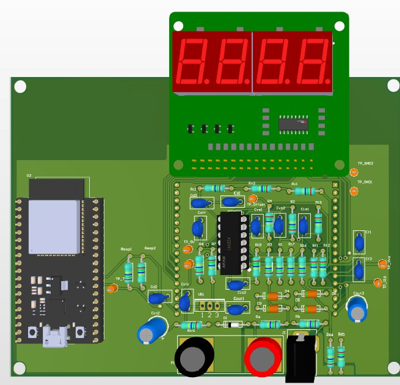
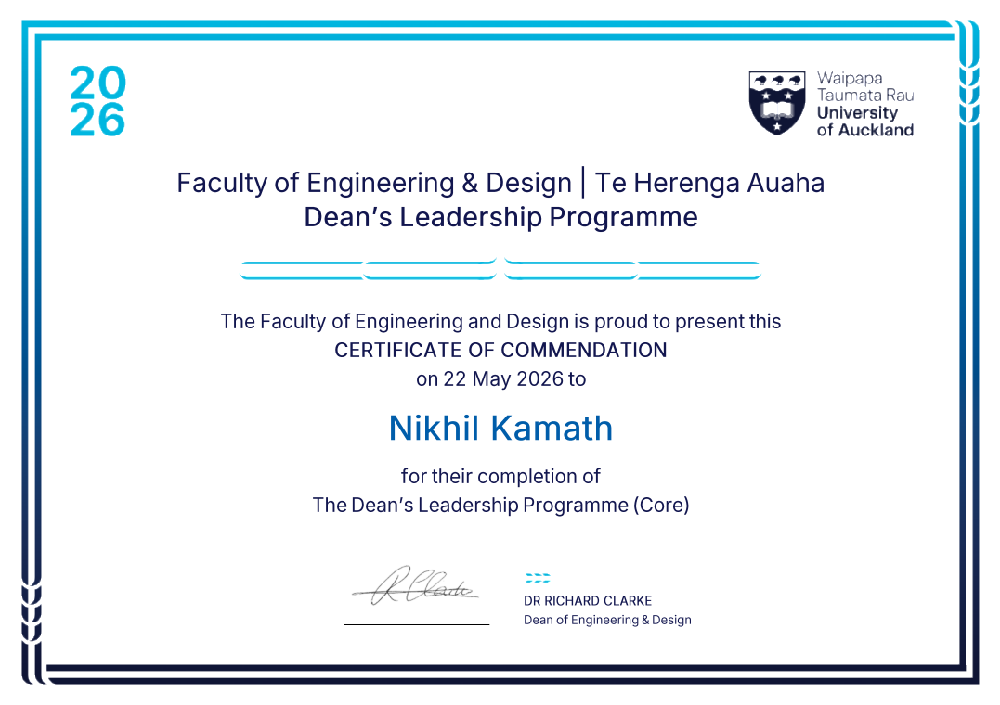
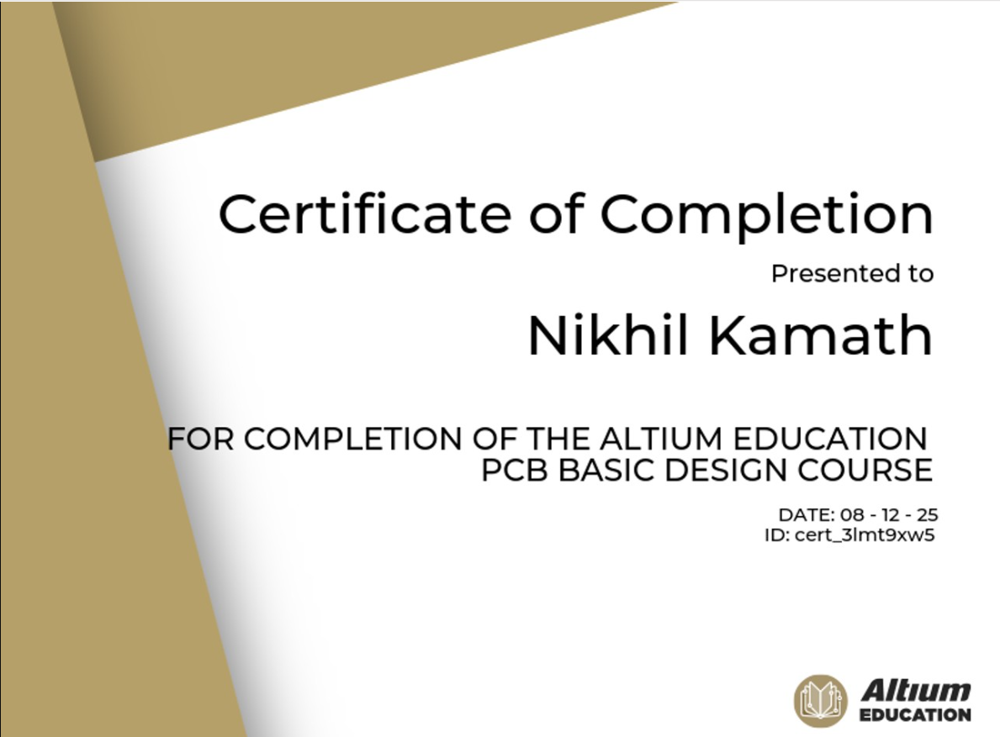

ENGINEERING PORTFOLIO
Penultimate Electrical and Electronic Engineering student at the University of Auckland with practical experience in circuit design, PCB development, sensor systems, and hardware testing.
I am a penultimate-year Electrical and Electronics Engineering student at the University of Auckland, with a particular interest in PCB design, hardware development and testing. I am also interested in power electronics, control systems and high-voltage power engineering.
I enjoy working on projects where I can apply the theoretical knowledge from my studies to practical engineering problems. My experience includes power electronics, sensing and circuit design, with a focus on developing and testing hardware.
My work so far has involved PCB design, circuit simulation, hardware testing and optimisation, as well as selecting and integrating components to develop functional engineering solutions.

FIG. 1.1 — Final PCB.

FIG. 1.2 — Schematic of the system.
Designed a MOSFET-based pyro enable circuit using an AND gate and NPN transistor so ignition can only trigger when two independent conditions are met.
Designed and built an analog sensing and transmission circuit to measure water levels, testing how different component choices affected range and accuracy.

FIG. 2.1 — The lens-focused sensing modules were the core of the water level system.

FIG. 2.2 — Confirming the signal behaviour with real measurements instead of assuming the simulation was enough.

FIG. 3.1 — The sensing chain for voltage, current, comparison, and offset generation feeding the control system.

FIG. 3.2 — The finished monitor board displaying live voltage, current, and power readings.
Worked in a team to design and develop an energy sensor which displays voltage, current and power in real time.

Dean's Leadership Programme (Core)
University of Auckland, Faculty of Engineering & Design — 2026

Altium Education — PCB Basic Design Course
December 2025